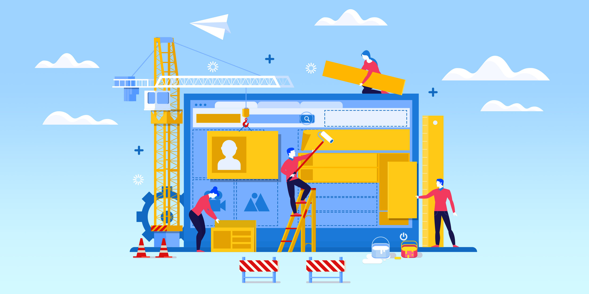
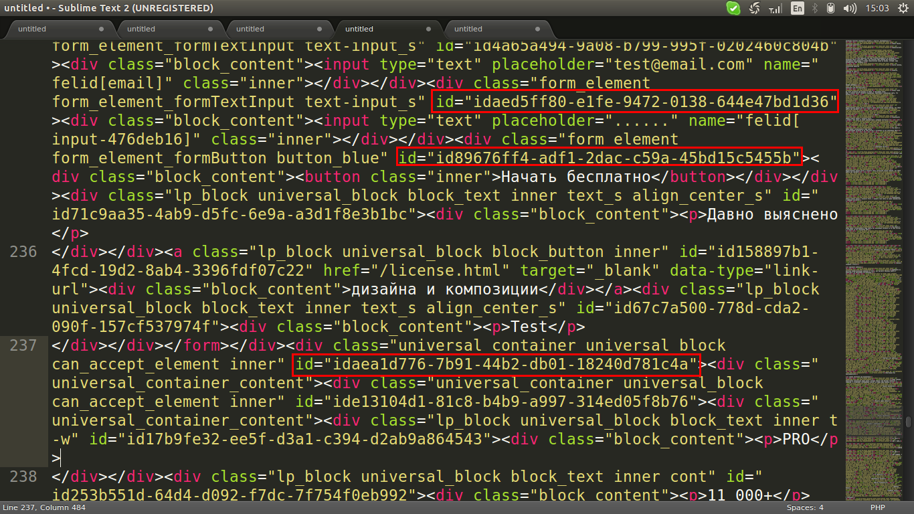

Почему верстка сайта с нуля лучше конструктора?
Вёрстка сайта с нуля очень трудоемкое и требующее больших знаний веб-разработчика
Однозначного ответа на вопрос:"Что лучше? Верстка сайта с нуля или конструктор" нет. Нельзя точно сказать, что конструкторы это плохо, и нужно всегда писать сайт с нуля. Даже несмотря на то, что они являются прямыми конкурентами для разработчиков.
Есть определенная аудитория клиентов для которых конструкторы подойдут просто идеально.
Для их целей сейчас в интернете огромное количество конструкторов, но они все имеют общие проблемы так что мы не будем концентрироваться на каком-то одном у конструкторов
Определенно есть свои как минусы(-) так и плюсы(+) так что давайте по порядку
Первое что нужно сразу уточнить это то, что конструкторы не подходят для профессионального бизнеса
Отсюда возникает первый минус(-) конструкторов это то, что если программист будет редактировать код, в лучшем случае это займет много времени, а в худшем он вообще ничего не поймёт. Так как конструкторы имеет большой непонятный код, который не понятен для разработчиков. Ему будет легче написать новый сайт, чем разбираться в той каше кода которую выдал конструктор.
Почему большинство разработчиков ненавидят конструкторы?
Опять же из-за большого и непонятного кода. В большинстве случаев этот код можно будет редактировать только в том конструкторе, в котором вы и делали этот сайт, так как другие конструкторы имеют другую структуру в построении сайтов. Этот сайт будет привязан к своему конструктору!
Сайт написанный на конструкторе с малой вероятностью попадет в рекомендации Google. Код должен быть простым и легким, а готовый сайт с конструктора весит от 1 мб до 10 мб, в зависимости от количества страниц и содержимого внутри него. Размер имеет большое влияние на удержание посетителей. Стали бы вы ждать даже 10 секунд, чтобы открыть, казалось бы простой сайт
Пример такого кода:
Ещё один минус это то, что на такие сайты нельзя добавить online
Для кого конструкторы сайтов удобны и полезны?
Они будут удобны для тех компаний, которым нужно дать краткую информацию о себе(лендинг). Или же единоразовая акция в магазине мебели.
Конструкторы существуют для следующих пользователей сети интернет, если:
- Вы ничего не знаете о верстке
- Вам не нужно ничего изучать
- Вы хотите сэкономить ваши деньги
- Вы не хотите тратить много времени на создание сайта
Главные отличия сайта с нуля от конструктора
Конструкторы сайтов заняли огромную нищу, для тех кто не хочет разбираться в кодировке, дизайне, продвижении и т.д. И благодаря этому создатели таких конструкторов зарабатвают очень неплохие такие деньги. Та же Avado продалась на 30 миллионов долларов.
Время
Это действительно долго. Создание достойного сайта с индивидуальным дизайном занимает не малое количество времени и сил. К примеру на конструкторе сайт можно создать за ± короткие сроки.
Зависимость
Создавая сайт на конструкторе вы не зависите от верстальщика и дизайнера, то есть вы сами выбираете временные рамки в которых вы будете создавать свой сайт на конструкторе.
Не большое количество знаний
Вам не нужно даже понимать, что такое домен и DNS. Не нужно разбираться с загрузкой сайта на хостинг или нанимать фрилансера специально, для того чтобы справиться с данными задачами.
- wix
- tilda
- uKit
- Nethouse
- 1С-UMI